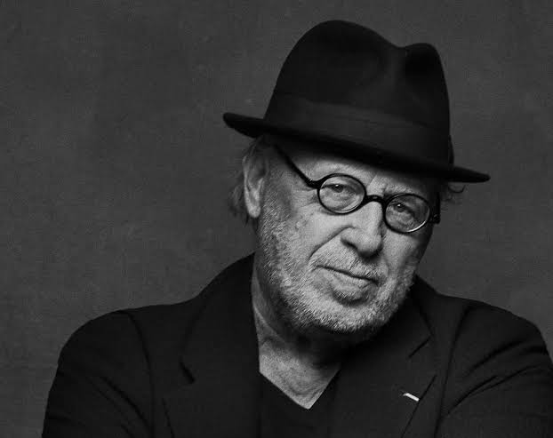
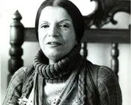
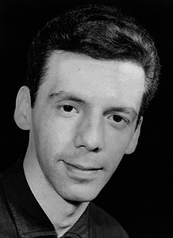
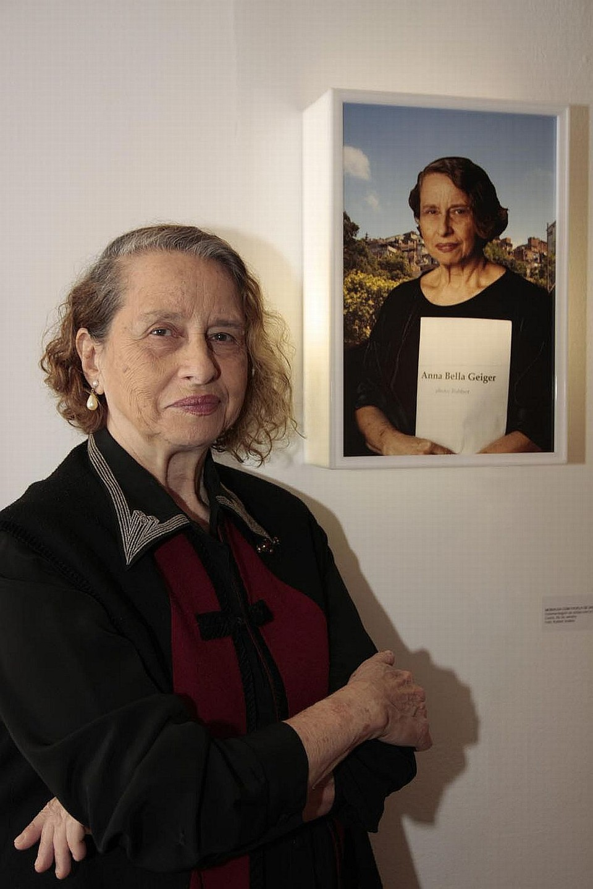

Joseph Kosuth (1945)
Joseph Kosuth é um importante artista plástico conceitual norte-americano do século XX. Ele reside atualmente nas cidades de Londres e New York. É também pintor e professor universitário. Nasceu na cidade de Toledo (Ohio, EUA) em 31 de janeiro de 1945. É formado na Escola de Artes Visuais de New York. Lecionou e foi palestrante nesta instituição entre os anos de 1967 e 1985. Além de suas obras de arte, contribuiu significativamente para o discurso sobre arte através de seus escritos. Seus ensaios, como "Arte Após a Filosofia" (1969), têm sido influentes na articulação dos princípios da arte conceitual.
Lygia Clark (1973)
Lygia Clark (1920-1988) foi uma pintora e escultora brasileira da arte geométrica. Abdicou do rótulo de artista, exigindo ser chamada de “propositora”. Lygia Pimentel Lins, conhecida como Lygia Clark (sobrenome do seu marido), nasceu em Belo Horizonte, Minas Gerais, no dia 23 de outubro de 1920. Em 1947, já casada e com três filhos, mudou-se para o Rio de Janeiro e iniciou-se na arte da pintura sob a orientação do artista plástico Burle Marx. Em 1950 Lygia foi morar em Paris, onde permaneceu até 1952. Nessa época, estudou com Fernand Léger, Arpad Szens e Isaac Dobrinsky, e expôs na Galeria do Institut Endoplastique de Paris.
Helio Oiticica (1964-1979)
Hélio Oiticica (1937-1980) foi um artista plástico brasileiro. Pintor, escultor e destacado artista performático, foi um dos grandes nomes da Arte Concreta no Brasil. Hélio Oiticica nasceu no Rio de Janeiro, no dia 26 de julho de 1937. Era filho de Ângela Santos Oiticica e de José Oiticica Filho, fotógrafo, pintor, entomologista e professor. Seu avô, José Oiticica, que foi professor, filólogo e anarquista, é o autor do livro O Anarquismo ao Alcance de Todos (1945).
Anna Bella Geiger (1978)
Anna Bella Geiger tem formação em língua e literatura anglo-germânicas. Inicia, na década de 1950, seus estudos artísticos no ateliê de Fayga Ostrower (1920 - 2001). Em 1954, viveu em Nova York nos Estados Unidos, onde frequentava as aulas de história da arte com Hannah Levy no The Metropolitan Museum of Art(MET) e, como ouvinte, cursos na New York University. Retorna ao Brasil no ano seguinte. Entre 1960 e 1965, participa do ateliê de gravura em metal do Museu de Arte Moderna do Rio de Janeiro(MAM-RJ), onde passa a lecionar três anos mais tarde.